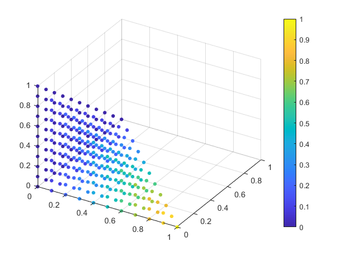
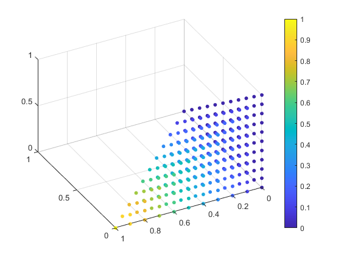
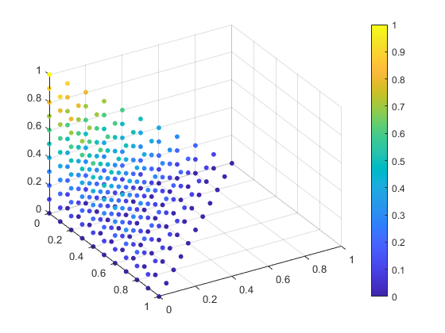
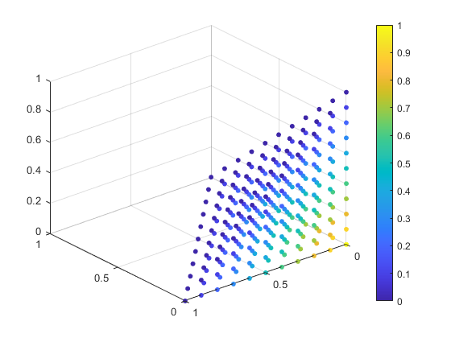

close all;
clear all;
clc;
[Xi_x,Xi_y,Xi_z]...
= meshgrid(0:0.1:1,0:0.1:1,0:0.1:1);
Xi_x = Xi_x(:);
Xi_y = Xi_y(:);
Xi_z = Xi_z(:);
Xi = [Xi_x(:),Xi_y(:),Xi_z(:)];
Xi = Xi((Xi_x + Xi_y + Xi_z) <= 1,:);
NumXi = size(Xi,1);
N = zeros(NumXi,4);
for i = 1:NumXi
N(i,:)...
= ShapeFun(Xi(i,:));
end
figure(1);
scatter3(Xi(:,1),Xi(:,2),Xi(:,3),20,N(:, 1),'filled')
view(31,38);
colorbar;
figure(2);
scatter3(Xi(:,1),Xi(:,2),Xi(:,3),20,N(:, 2),'filled')
view(-118,43);
colorbar;
figure(3);
scatter3(Xi(:,1),Xi(:,2),Xi(:,3),20,N(:, 3),'filled')
view(59,35);
colorbar;
figure(4);
scatter3(Xi(:,1),Xi(:,2),Xi(:,3),20,N(:, 4),'filled')
view(-130,30);
colorbar;
   